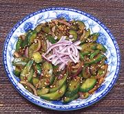

|
Spicy Cucumber SaladKorea - Oi-muchim | ||||
| Makes: Effort: Sched: DoAhead: |
10 oz ** 4-1/4 hrs Yes |
Excellent as Ban Chan (small side dish) or small Salad. Good flavors, not too chili hot, but otherwise fairly assertive. | |||
|
12 1/2 2 1 2 2 2 ----- 2 2/3 2 ----- |
oz T cl oz t t --- T t t --- |
Cucumbers (1) Salt Garlic Scallion Onion Chili Flake (2) Sesame Toasted (3) -- Dressing Soy Sauce Sugar Sesame Oil Dark ---------- |
Make - (4-1/4 hrs - 10 min work)
|